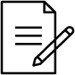
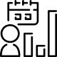

Agrivista Farms
Home
About Us
Pages
Login
Sign Up
The Role of Technology in Revolutionizing Agriculture
Li Europan lingues es membres del sam familie. Lor separat existentie es un myth. Por scientie, musica, sport etc, litot Europa usa li sam vocabular.
Get Started
Learn More
Our Passion for Agriculture Nurturing Growth and Sustaining the Future
Li Europan lingues es membres del sam familie. Lor separat existentie es un myth. Por scientie, musica, sport etc, litot Europa usa li sam vocabular.
Get Started
Our service
Li Europan lingues es membres del sam familie. Lor separat existentie es un myth Por scientie, musica.

Blog and Article Writing

Website Content
 Content Strategy and Consulting
Content Strategy and Consulting

Our Featured Product
Li Europan lingues es membres del sam familie. Lor separat existentie es un myth Por scientie, musica.
Rice
Li Europan lingues es membres del sam familie. Lor separat existentie es un myth.
Wheat
Li Europan lingues es membres del sam familie. Lor separat existentie es un myth.
Pumpkin
Li Europan lingues es membres del sam familie. Lor separat existentie es un myth.
Cabbage
Li Europan lingues es membres del sam familie. Lor separat existentie es un myth.
Sustainable Farming Meets Technology: Building a Greener Future
Learn More
Contact Us
The Benefits of Choosing Our Expertise
Learn More
40+
Product
2,458+
Satisfied Clients

20
Local Team Members
Testimonials
Li Europan lingues es membres del sam familie. Lor separat existentie es un myth. Por scientie, musica, sport etc, litot Europa usa li sam vocabular.

Madeline Williamson
Forward Creative Manager
Li Europan lingues es membres del sam familie. Lor separat existentie es un myth. Por scientie, musica, sport etc, litot Europa usa li sam vocabular.
Our Blog
Li Europan lingues es membres del sam familie. Lor separat existentie es un myth. Por scientie, musica, sport etc, litot Europa usa li sam vocabular.
Innovations for a Greener Future
Li Europan lingues es membres del sam familie. Lor separat existentie es un myth. Por scientie, musica.
Read More
The Power of
Agricultural Analytics
Agricultural Analytics
Li Europan lingues es membres del sam familie. Lor separat existentie es un myth. Por scientie, musica.
Read More
Cultivating Sustainable and Resilient Farms
Li Europan lingues es membres del sam familie. Lor separat existentie es un myth. Por scientie, musica.
Read More
AgriVista Farms
Li Europan lingues es membres del sam familie. Lor separat existentie


Pages
Home
About
Product
Blog
About
Testimonials
Our Service
Contact Us
Benefit